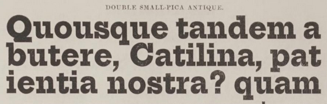

Welcome
This project begins the work of tracing the lineage of job typefaces for sale and in use in the 19th century in the United States. The title comes both from the sometimes-dim 19th-century view of ornamented typefaces and the job work done with them, and the more modern attitude toward that work that almost dismisses it as quaint.
Research Questions
- What directly led to the rise and fall of the typographic variety used in 19th century job work in the United States?
- Is there a discernible philosophy or principle in the typographical choices of US job printers of this period?
- What is it, and how do we know (e.g. was it described after the fact by designers or critics, or do we have clear evidence of contemporaneous ideas)?
- How was it influenced by the answers to question 1?
The Short Answer to Question 1
The rise was significantly caused by the demand for attention-grabbing advertising brought on by the manufacturing and shipping improvements of the Industrial Revolution. As people congregated in cities, it became easier to sell goods and services to them, and the job printer became a sort of middleman. The fall was precipitated by factors, including the ease of printing and design that came with chromolithography in the second half of the century and people just plain getting tired of the loud, overexciting state of job work.
The Long Answer to Question 2
That's the whole website.
Site Design
The design of this website is not finished, but it does draw significantly from primary sources in its visual design. Though my decisions may not always be the most tasteful, I hope it's clear that I'm not mocking 19th century designers, even at the height of typographic opulence. I find their work silly or over the top at times, based on my own design experience in the 21st century, but I respect the creativity and, yes, critical thought they brought to their work.
Hopefully this project shows that 19th century typefaces and their use were not inherently tasteless. As Thomas Shaw Houghton wrote in 1841, "a job may be very tastily done, and yet exhibit absurdities".1
Graphics
The main navigation backgrounds are slightly edited versions of pieces from Mackellar, Smiths, and Jordan's Combination Border Series 96.1 I did a little editing to remove non-border content as well as color correcting and blending to make the scroll ends on the navigation look good in this context. Otherwise they are exactly as they appear in MSJ.
To the best of my knowledge, backgrounds and all other samples are screenshotted from digital versions of books that are in the public domain because they were published before 1928 (US) or their authors died prior to 1952 (UK).2
Typefaces
- Arbutus by Karolina Lach, inspired by faces like
 (Boston 1856) and
(Boston 1856) and  (MSJ 1876)
(MSJ 1876) - Arbutus Slab by Karolina Lach, inspired by 19th century antique faces
- Hepta Slab (shown here at 800 weight) by Mike LaGattuta, directly based on Bruce faces similar to this 1848 antique
 - 5th Grade Cursive by Lee Batchelor, a modern typeface reminiscent of 19th century script faces
- Computer Modern Sans Serif by Donald E. Knuth, a modern typeface whose serif form was based on 19th century didones
Sources
- MacKellar, Smiths & Jordan Co, Specimens of Printing Types: Ornaments, Borders, Corners, Rules, Emblems, Initials, &c., (Philadelphia: The Company, 1892), 449.
- The Public Domain Review, “What Will Enter the Public Domain in 2023?”
Sources
- Thomas Shaw Houghton, The Printers' Practical Every-Day-Book, (London:T.S. Shaw, 1841), 35.